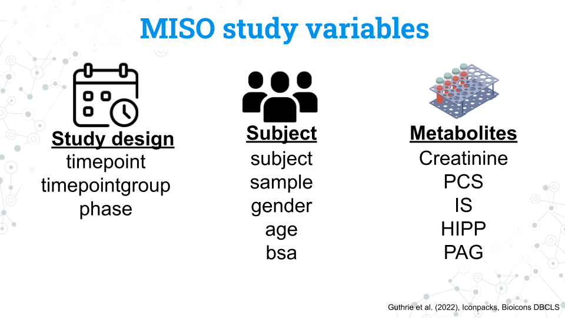
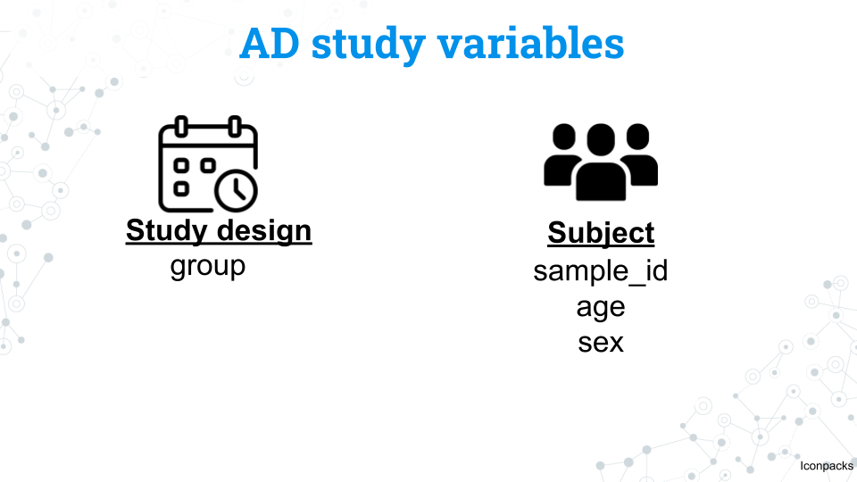

Welcome
16S rRNA Human Gut Microbiome Project Work
This module is meant to provide students with a working space for their 16S rRNA human gut microbiome projects. In addition to the MISO dataset from the other tutorials, we have a number of other datasets you can explore here as well as code chunks and starting off points to help get you started!
Learning Goals
- Familiarize the datasets available to you
- Select a dataset that you’d like to work on for your research project
- Begin your exploratory analysis of your chosen dataset to refine your research questions
Version: 2
Meet MISO
These data are from Impact of a 7-day homogeneous diet on interpersonal variation in human gut microbiomes and metabolomes by Guthrie et al. (2022).
It’s difficult to capture the mechanisms and effects of diet on the gut microbiome given the sheer number of variables involved. The microbiome individuality and stability over time (MISO) study aimed to explore the connection between diet, microbiome, and metabolites by looking at the effect of feeding a standardized diet to people over 7 days.
MISO study diet and sampling schedule

Experimental design for the MISO study by Guthrie et al. (2022): Figure edited by Sayumi York (July 11, 2025).
The figure above shows the study design for the MISO study. You do not need to memorize all these details; feel free to refer to this page throughout the project:
- Participants eat their usual, baseline diet (BD) for 14 days
- Participants all eat the same diet, the homogenized diet (HD), for 7 days
- Participants return to their usual diet during the washout (WO) period for 7 days
The study lasts a total of 28 days. Samples from the blood, stool, and urine, our metabolite and 16S rRNA data are taken at 5 different timepoints:
- Timepoint 1: Day 0 (the start of the study)
- Timepoint 2: Day 13
- Timepoint 3: Day 17
- Timepoint 4: Day 21
- Timepoint 5: Day 28
MISO study variables and factors
Metadata variables for the MISO study by Guthrie et al. (2022): Figure edited by Sayumi York (July 11, 2025).
We have a number of variables we can use in our analysis. Notice that the variables for the study and subjects are in lowercase. This is also how you will access these variables in R.
MISO study design variables
| Variable | What is it? | Factors |
|---|---|---|
| timepoint | The 5 samplings that occur on days 0, 13, 17, 21, and 28 coded as timepoints 1 through 5 | 1, 2, 3, 4, 5 |
| timepoint group | The diet the subject was on during the sampling | BD, HD, WO |
| phase | Whether the subject was on their usual diet or the homogenized diet during sampling | non-miso, miso |
MISO subject variables
| Variable | What is it? | Factors |
|---|---|---|
| subject | A unique ID given to each subject (participant) | S## (ex. S02 is subject 2. Note that while there are a total of 21 subjects in the study, but their subject numbers are not 1 through 20 |
| sample | A unique ID given to every sample taken during the study that includes the subject and timepoint of the sample | MISO-Subject##-Sample# (ex. MISO1-S02-1 is the sample from subject 2 at timepoint 1) |
| gender | The gender of the subject | M, F. All subjects were cisgender |
| age | The age in years of the subject | A continuous variable from 23 to 75 years old |
| bsa | Body surface area; a measure of body size | A continuous variable from 1.6 to 2.8 |
MISO metabolite variables
| Variable | What is it? | Factors |
|---|---|---|
| Creatinine | Creatinine | A continuous variable from 1072 to 3971 |
| PCS | p-cresol sulfate | A continuous variable from 2 to 95 |
| IS | Indoxyl sulfate | A continuous variable from 3 to 58 |
| HIPP | Hippuric acid | A continuous variable from 16 to 1119 |
| PAG | Phenylacetylglutamine | A continuous variable from 16 to 318 |
MISO phyloseq objects
#A phyloseq object containing the normalized (proportions) data
miso
#A phyloseq object containing the data as raw counts
miso_countsMeet FeFiFo
These data are from Gut-microbiota-targeted diets modulate human immune status by Wastyk et al. (2021). We call this the FeFiFo study because the experimental design includes fermented and fiber-rich food treatment groups!
This study looked at the effect of either high fiber or fermented foods. Rather than controlling diet entirely through standardized portions, participants were allowed to select what foods they ate so long as these foods were high in fiber or were fermented. Additional metadata was collected from participants including ethnicity, relationship status, employment status, and education level.
FeFiFo study diet and sampling schedule

Experimental design for the FeFiFo study by Wastyk et al. (2021): Figure edited by Sayumi York (July 11, 2025).
The figure above shows the study design for the FeFiFo study. You do not need to memorize all these details; feel free to refer to this page throughout the project:
- Participants eat their usual, baseline diet for 3 weeks
- Participants slowly increase their intake of intervention (fiber or fermented, not both!) foods, in the ramp for 4 weeks
- Participants maintain their intervention during a maintenance period of 6 weeks
- Participants can choose to eat what they want, including any intervention foods during the choice period of 4 weeks
The study lasts a total of 17 weeks. Samples from the gut microbiota (among other blood samples) at 9 different timepoints across all phases of the experiment. Unlike the MISO study, these timepoints are not assigned to distinct phases as some of them were taken during the transition periods between phases.
FeFiFo study design variables

Metadata variables for the FeFiFo study by Guthrie et al. (2022): Figure edited by Sayumi York (July 11, 2025)
We have a number of variables we can use in our analysis. Notice that the variables for the study and subjects are in lowercase. This is also how you will access these variables in R.
FeFiFo study design variables
| Variable | What is it? | Factors |
|---|---|---|
| timepoint | The 9 samplings that occur throughout the experiment | 1-9 |
| diet | The diet the subject was on during the sampling | Fiber, Fermented |
FeFiFo subject variables
| Variable | What is it? | Factors |
|---|---|---|
| subject | a unique id given to the participant | A number between 8001 and 8041 |
| age | The age in years of the subject | 26.1-74.5 |
| gender | The gender of the subject | Male, Female. All subjects were cisgender |
| ethnicity | The ethnicity of the subject | Asian, White. |
| relationship | The relationship status of the subject | Single/Never married, Married/Partnered, Divorced |
| education | The education of the subject | Some college, College graduate ,Some post-graduate school, Post-graduate degree |
| employment | The employment status of the subject | Unemployed, Working part-time, Working full-time, Retired |
| height | The height of the subject (meters) | 1.52-1.87 |
| weight | The height of the subject (kg) | 44.3-100.6 |
| bmi | The bmi of the subject | 17.71-31.68 |
| waist | The waist measurement of the subject (cm) | 27.56-46.85 |
Some research ideas to get you started
- How variable is the change of microbiome composition and alpha diversity across individuals? Do all individuals change the same amount or are there some individuals much more sensitive to their chosen food group?
- What are the most abundant microbes in each treatment (fiber, fermented)? Are they similar taxa or different?
- Is there any relationship between ethnicity, education, employment, relationship status and microbiome composition and/or alpha diversity?
- Are the subject’s microbiomes at a given timepoint similar to each other? Similar to other samples from the same subject no matter the timepoint?
FeFiFo phyloseq objects
#A phyloseq object containing the normalized (proportions) data
fefifo
#A phyloseq object containing the data as raw counts
fefifo_countsMeet the Alzheimer’s study
These data are from Gut microbiota is altered in patients with Alzheimer’s disease by Zhuang et al. (2018). For convenience’s sake we will refer to it as our AD study.
This study compares the gut microbiomes of subjects with a clinical diagnosis of Alzheimer’s disease with healthy age and sex matched individuals. While we can’t control for all health conditions, the study attempted to limit subjects to participants who match all the following:
- Have no family history of dementia
- Have no other diagnosis of a neurodegenerative disease
- Have no other severe conditions such as cancer
- Have no chronic mental illness
- Have no history of antibiotic use within the last 6 months
- Have no gastrointestinal disease (ex. IBS)
The study design was very simple. Fecal samples were taken from subjects - no timeline or intervention included!
AD study variables

Metadata variables for the AD study by Zhuang et al. (2018): Figure edited by Sayumi York (July 11, 2025)
We have a number of variables we can use in our analysis. Notice that the variables for the study and subjects are in lowercase. This is also how you will access these variables in R.
| Variable | What is it? | Factors |
|---|---|---|
| sample_id | a unique id given to the participant | Begins with either AD or CON (Control) |
| age | The age in years of the subject | 55-85 |
| sex | The gender of the subject | male, female |
| group | Whether the subject was in the AD group or control group | AD, control. |
Some research ideas to get you started
- How similar are microbiomes between healthy and AD individuals in composition and/or alpha diversity?
- Looking at other published research studies, are the microbial taxa associated with AD also found in this study?
- Select a microbial taxa of interest (perhaps from the idea above) and explore it at increasing levels of resolution up to the level of species. Looking at other published research studies, what functions are these taxa associated with? Do they have any relation to AD or other neurodegenerative diseases?
AD objects
#A phyloseq object containing the normalized (proportions) data
ad
#A phyloseq object containing the data as raw counts
ad_countsMeet the OC study
These data are from Influence of menstrual cycle and oral contraception on taxonomic composition and gas production in the gut microbiome by Terrazas et al. (2025). For convenience’s sake we will refer to it as our OC study.
This study compared the microbiomes of women who were on OC and those who were not (a history of at least 3 months without taking an OC).
OC study variables

Metadata variables for the OC study by Terrazas et al. (2025): Figure edited by Sayumi York (July 11, 2025)
| Variable | What is it? | Factors |
|---|---|---|
| sample_id | a unique id given to each sample | Fomatted with subject treatment timepoint (ex.701C2 is subject 701, who is a control, this is the 2nd timepoint sampled |
| subject | a unique id given to the participant | A number between 701 and 990 |
| treatment | Whether the subject is on OC or is a control | Control, User |
| diet | Whether the subject’s diet contained prunes | Prune, No Prune |
| day | Days into the study the sample was collected | Day 1, Day 21 |
| age | The age in years of the subject | 18-24 |
| ethnicity | The ethnicity of the subject | Asian, White, Hispanic, Black, NA |
| height | The height of the subject (cm) | 149.86-177.8 |
| weight | The height of the subject (kg) | 44.6-96.9 |
| bmi | The bmi of the subject | 17.86-32.20 |
| ageofmenarche | The age of the subject at menarche (first menstrual cycle) | 10-15 |
| avgnumdaysbtwperiods | The average number of days between periods for the subject | 20-120 |
| OCE2Dosage | The dosage of the oral contracaptive (oestrogen, in mcg) | 20, 30, 35 |
| agefirstOCuse | Age when starting OC | 14-24.5 |
| totalyearsonOC | Total years on OC | 0.3-9 |
| BMperday | Number of bowel movements per day | 0.57-4 |
| BMperwk | Number of bowel movements per week | 4-28 |
Some research ideas to get you started
- Is there any relationship between ethnicity, diet, OCE2dosage, or bowel movements and microbiome composition and/or alpha diversity?
- Create a multidimensional analysis: how do samples cluster? By diet? Age? Subject? Dosage? Treatment?
- How do the microbial compositions of different treatments at increasing levels of resolution (choosing the most abundant group each time)?
OC objects
#A phyloseq object containing the normalized (proportions) data
oc
#A phyloseq object containing the data as raw counts
oc_counts
#A phyloseq object containing the normalized (proportions) data without the outlier sample (948N2)
oc_no948N2
#A phyloseq object containing the data as raw counts without the outlier sample (948N2)
oc_no948N2_countsBar plots
- Objective: Vizualize the microbial composition of samples
- Best for questions like: What microbial taxa are dominant across samples? What drives differences in microbial composition between conditions?
- Example question: How does the microbial composition differ between patients on their typical diet and a high fiber diet?
- Data format: To make it easy to understand and visualize the data we will use data that has been normalized by proportions.
Bar plot code template
#Subsetting based on a group
my_subset <- subset_taxa(miso, Phylum == "Firmicutes")
#Plotting using the new subset
plot_bar(my_subset, x= "subject", fill = "Class", title = "My title") +
geom_bar(aes(color = Class, fill = Class), stat = "identity", position = "stack")Alpha diversity
- Objective: Compare the biodiversity (richness and evenness) between samples/groups
- Best for questions like: How variable or stable is the microbial community over time or space?
- Example question: Does changing the diet reduce biodiversity in the human gut? Are male microbiomes more diverse than female microbiomes?
- Data format: Because we want to include rare species in our analysis, we will use our raw data, which is in counts.
Alpha diversity code template
my_subset <- subset_samples(miso_counts, gender == "F")
plot_richness(my_subset, x="timepoint",
color="phase",
shape="timepointgroup",
title ="fill in the blank",
measures= "Simpson")Multidimensional analysis
PCoA
- Objective: Comparing how similar samples are to one another
- Best for questions like: How much variability is there within a given condition? What samples are most similar to each other?
- Example question: Are male and female samples grouped together? Do samples group together by a given metabolite? How similar are samples within each timepointgroup?
- Data format: We will use normalized counts (proportions) to be able to make comparisons between samples.
How to interpret
Samples that cluster together have more in common than samples that are farther apart.
Multidimensional analysis code template
#Subset a group of interest
miso_subset <- subset_taxa(miso, Phylum == "Firmicutes")
#Ordinate based on your subset
miso.pcoa.subset <- ordinate(miso, method="PCoA", distance="bray")
#Plot the new subsetted ordination with the subsetted phyloseq object
plot_ordination(miso_subset, miso.pcoa.subset,
color = "subject",
shape = "phase",
title="My subsetted (Firmicutes) PCoA")Differential abundance
- Objective: Compare the change in abundance of ASVs between groups (conditions)
- Best for questions like: What ASVs showed the most change in abundance between groups (conditions)?
- Example question: What ASVs changed the most between timepoint 1 and 2? What trends are there in the change in abundance for a given taxonomic group?
- Data format: DESeq2 will normlalize the data for us in the way that best suits it, so we will use our raw count data
How do we interpret the results?
- log2FoldChange: The latter of the two conditions in our chosen variable is what DESeq2 considers the baseline. For example, the code: my_comparision <-c(“timepointgroup”, “WO”, “BD”), sets the baseline as BD. Thus, any positive number represents a greater abundance in the former (“WO”) condition compared to the latter - baseline (“BD”). The larger the magnitude of the number, the greater the difference in abundance.
- p-value: The base p-value, without corrections for multiple comparisons.
- p-adj: The p-value after correcting for multiple comparisions. You should use p-adj when reporting your results.
Differential abundance functions: special cases
We have two special cases for our differential expression analysis.
Differential abundance concerned with a continuous variables such as age, height, and metabolites: We will use the function Differential_Abundance_Continuous() instead of Differential_Abundance().
Differential abundance with 0-inflated data that gives us the error: Error in estimateSizeFactorsForMatrix(counts(object), locfunc = locfunc, : every gene contains at least one zero, cannot compute log geometric means
Please refer to the code chunks below with examples for those specific functions. Note that they have some slight differences from the original function!
Differential abundance code template
# STEP 1: Convert the phyloseq object to a DESeq2 object and tell R the experimental design
my_miso_DESeq2 <- phyloseq_to_deseq2(miso_counts, design = ~ timepointgroup)
# STEP 2: Select the groups to compare
my_comparision <-c("timepointgroup", "WO", "BD")
# STEP 3: Run the differential abundance analysis at the chosen p-value
Significant_DEseq2_ASVs<-Differential_Abundance(my_miso_DESeq2, my_comparision, 0.05)
# STEP 4: Retrieve the list of ASVs with a significant difference in abundance between the chosen groups
Significant_DEseq2_ASVs
# STEP 5: Plot the results with your chosen x axis and legend
ggplot(Significant_DEseq2_ASVs, aes(x = Phylum, y=log2FoldChange, color= Class)) + geom_point(size=3, position = "jitter") +
theme(axis.text.x = element_text(angle = -90, hjust = 0, vjust=0.5))+
ggtitle("my title here")Differential abundance for continuous data code template
What’s different with continuous data?
- Interpreting the log2FoldChange: In this case, the log2FoldChange is the difference in abundance for every unit increase of the design factor. In the example below, log2FoldChange represents the amount of change in the ASV’s abundance for every year the subject grows older (since age is measured in years in the dataset).
- Changes in the code: We do not need to specify groups for comparison. Notice how in step 2 we simply provide the continuous variable we are interested in.
# STEP 1: Convert the phyloseq object to a DESeq2 object and tell R the experimental design
my_miso_DESeq2 <- phyloseq_to_deseq2(miso_counts, design = ~ age)
# STEP 2: Select the groups to compare
name_for_comparision <-"age"
# STEP 3: Run the differential abundance analysis at the chosen p-value
Significant_DEseq2_ASVs<-Differential_Abundance_Continuous(my_miso_DESeq2, name_for_comparision, 0.05)
# STEP 4: Retrieve the list of ASVs with a significant difference in abundance between the chosen groups
Significant_DEseq2_ASVs
# STEP 5: Plot the results with your chosen x axis and legend
ggplot(Significant_DEseq2_ASVs, aes(x = Phylum, y=log2FoldChange, color= Class, shape = Order)) + geom_point(size=6) +
theme(axis.text.x = element_text(angle = -90, hjust = 0, vjust=0.5))Differential abundance for 0-inflated data code template
What’s different with 0-inflated data?
- What’s going on underneath?: We have too many ASVs with 0 counts in our dataset. DESeq2 was originally created for RNA-seq data, where this phenomenon is much rarer than in microbiome data. We will use a slightly different statistical approach in this function to get around this problem.
- Changes in the code: In step 3 we will also provide our count data in addition to our DESeq2 object, comparision groups, and p-value cutoff.
# STEP 1: Convert the phyloseq object to a DESeq2 object and tell R the experimental design
my_ad_DESeq2 <- phyloseq_to_deseq2(ad_counts, design = ~group)
# STEP 2: Select the groups to compare
my_comparison <- c("group", "AD", "control")
# STEP 3: Run the differential abundance analysis at the chosen p-value
Significant_DEseq2_ASVs <- Differential_Abundance_AltGeo(ad_counts, my_ad_DESeq2, my_comparison, 0.05)
# STEP 4: Retrieve the list of ASVs with a significant difference in abundance between the chosen groups
Significant_DEseq2_ASVs
# STEP 5: Plot the results with your chosen x axis and legend
ggplot(Significant_DEseq2_ASVs, aes(x = Phylum, y=log2FoldChange, color= Class)) + geom_point(size=3, position = "jitter") +
theme(axis.text.x = element_text(angle = -90, hjust = 0, vjust=0.5))+
ggtitle("my title here")Common errors
No significant genes found No datapoint on the DESeq2 graph - missing
NA? Warning: Removed 3 rows containing missing values or values outside
the scale range (geom_point()).
Works cited
Aden-Buie G, Schloerke B, Allaire J, Rossell Hayes A (2023). learnr: Interactive Tutorials for R. https://rstudio.github.io/learnr/, https://github.com/rstudio/learnr
Evans, Ciaran, Johanna Hardin, and Daniel M. Stoebel. “Selecting between-sample RNA-Seq normalization methods from the perspective of their assumptions.” Briefings in bioinformatics 19.5 (2018): 776-792.
Guthrie, Leah, et al. “Impact of a 7-day homogeneous diet on interpersonal variation in human gut microbiomes and metabolomes.” Cell host & microbe 30.6 (2022): 863-874.
McMurdie, Paul J., and Susan Holmes. “phyloseq: an R package for reproducible interactive analysis and graphics of microbiome census data.” PloS one 8.4 (2013): e61217.
McMurdie, Paul J., and Susan Holmes. “Waste not, want not: why rarefying microbiome data is inadmissible.” PLoS computational biology 10.4 (2014): e1003531.
R Core Team (2024). R: A Language and Environment for Statistical Computing. R Foundation for Statistical Computing, Vienna, Austria. https://www.R-project.org/.
Stoudt, Sara, Anthony D. Scotina, and Karsten Luebke. “Supporting Statistics and Data Science Education with learnr.” Technology Innovations in Statistics Education 14.1 (2022).
Wickham, Hadley. “ggplot2.” Wiley interdisciplinary reviews: computational statistics 3.2 (2011): 180-185.